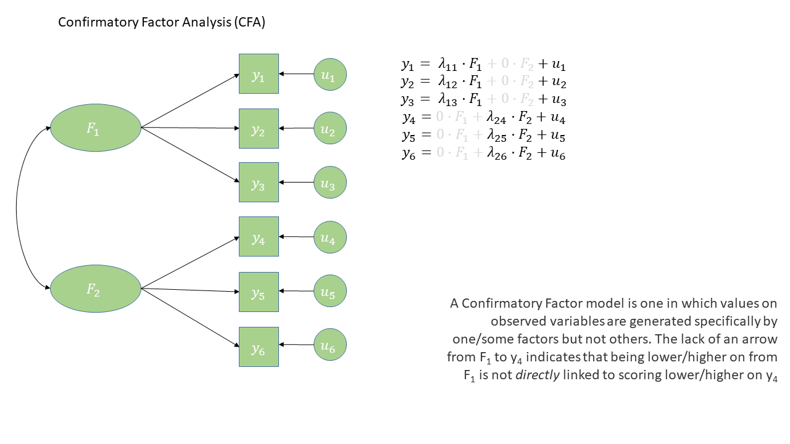
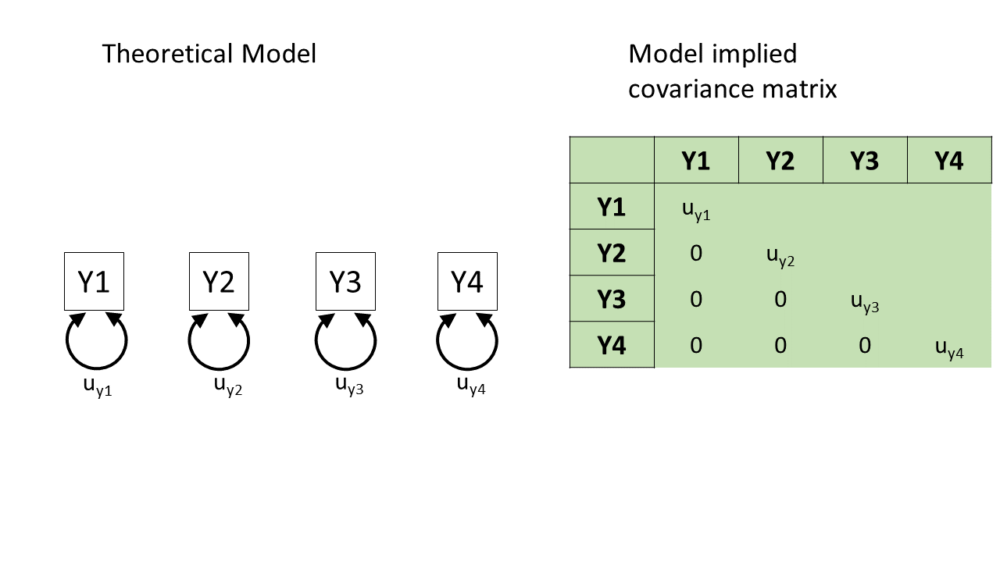
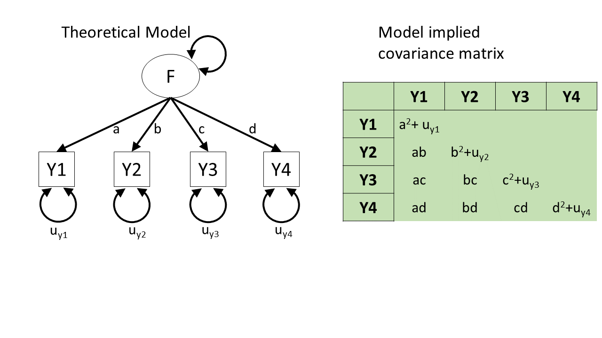
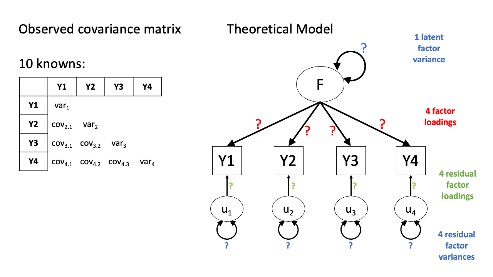
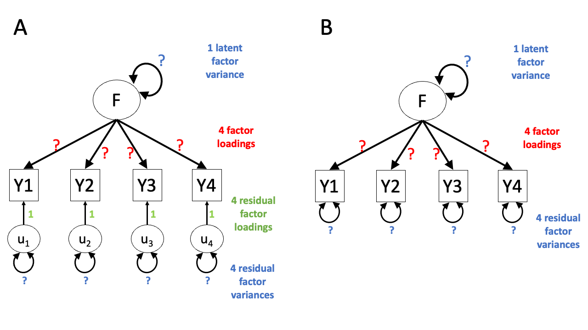
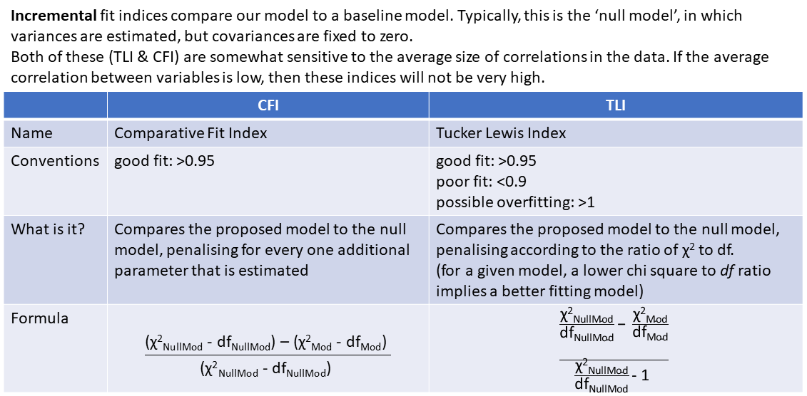
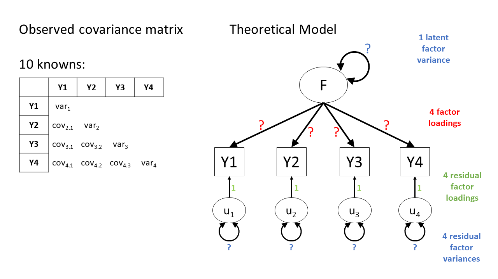
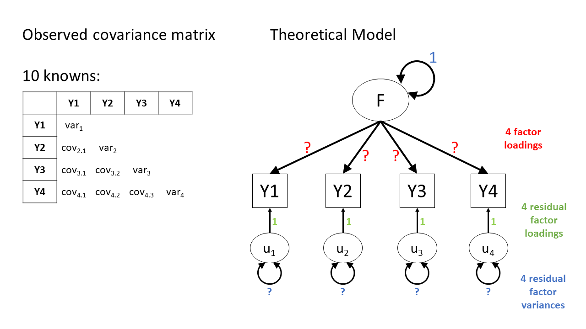
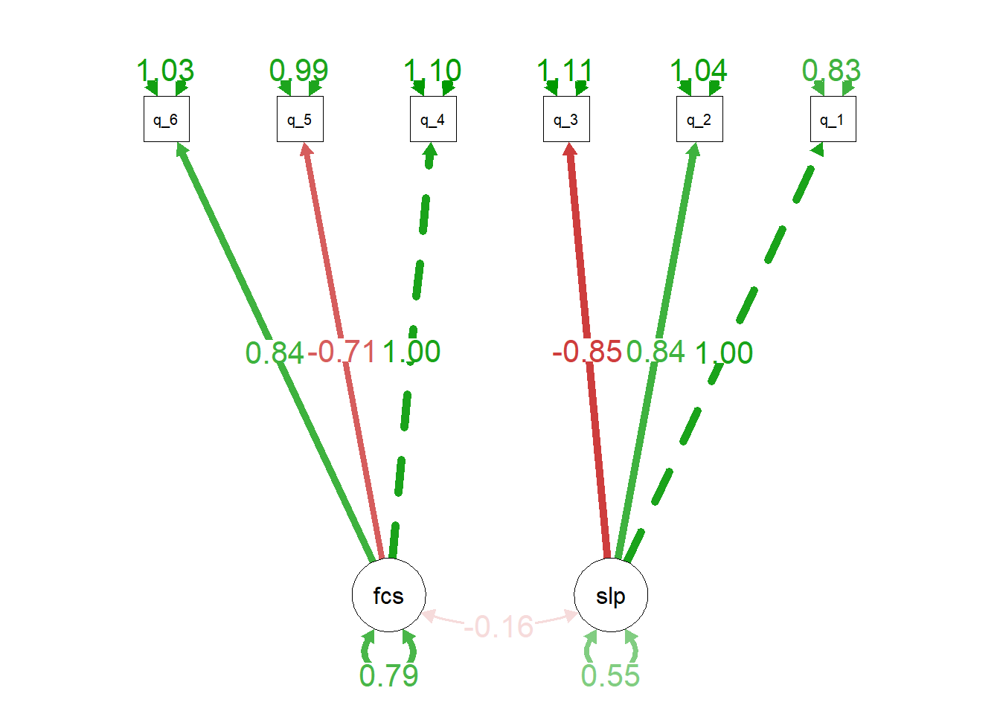
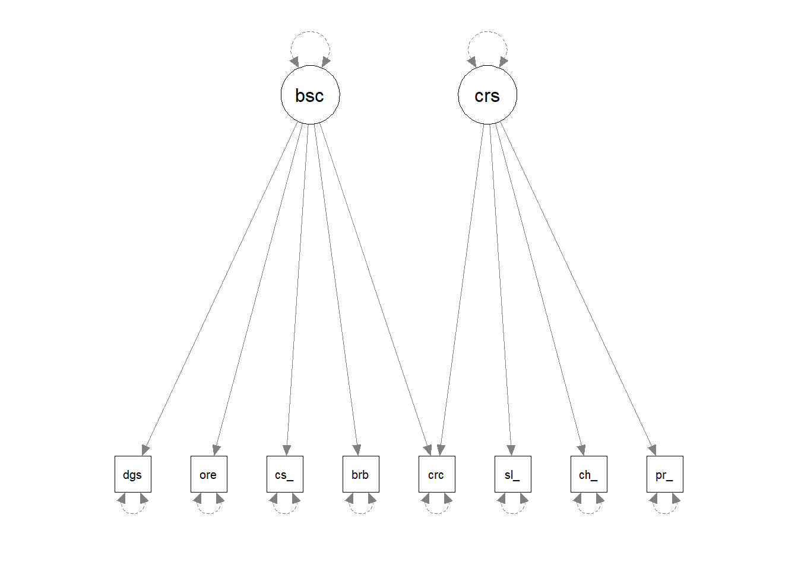

4: Confirmatory Factor Analysis
- Learn about a method of testing theoretical models of the construct(s) that result in variability in a set of observed variables
- First use of the {lavaan} package in R
CFA
Confirmatory Factor Analysis (CFA) is a method that allows us to test a pre-specified factor structure (or to compare competing hypothesized structures). Typically these factor structures are ones that have been proposed based on theory or on previous research. Note that this is a change from the ‘exploratory’ nature of EFA to a situation in which we are explicitly imposing a theoretical model on the data.
The diagram for a Confirmatory Factor Analysis model looks very similar to that of an Exploratory Factor Analysis, but we now have the explicit absence of some arrows - i.e. a variable loads on to a specific factor (or factors - we can have a variable that loads on multiple), and not on others.
The absence of some arrows is what imposes our theory here - the diagram in Figure 1 makes the claim that the only reason we would see a correlation between items y1 and y6 is because the underlying factors are correlated.
CFA in R - The lavaan package
For these sort of models, we’re going to rely heavily on the lavaan (Latent Variable Analysis) package. This is the main package in R for fitting a whole wealth of model types - all of which come under the umbrella term of “Structural Equation Models (SEM)”, and there is a huge scope of what we can do with it.
Operators in lavaan
The first thing to get to grips with is the various new operators which lavaan allows us to use.
Our standard multiple regression formula in R was specified as
y ~ x1 + x2 + x3 + ...In lavaan, we continue to fit regressions using the ~ symbol, but we can also specify the construction of latent variables using =~ and residual variances & covariances using ~~.
| Formula type | Operator | Mnemonic |
|---|---|---|
| latent variable definition | =~ |
“is measured by” |
| regression | ~ |
“is regressed on” |
| (residual) (co)variance | ~~ |
“is correlated with” |
| intercept | ~1 |
“has an intercept” |
| defined parameters | := |
“is defined as” |
(from https://lavaan.ugent.be/tutorial/syntax1.html)
Fitting models with lavaan
In practice, fitting models in lavaan tends to be a little different from things like lm() and (g)lmer(). Instead of including the model formula inside the fit function (e.g., lm(y ~ x1 + x2, data = df)), we tend to do it in a step-by-step process. This is because as our models become more complex, our formulas can get pretty long!
In lavaan, it is typical to write the model as a character string (e.g. mymodel <- "y ~ x1 + x2") and then we pass that formula along with the data to the relevant lavaan function such as cfa() or sem(), giving it the formula and the data: cfa(mymodel, data = mydata).
So if we are fitting a model that — in a diagram — looks like this:

- First we specify the model. By default, the correlation between factors will be included, but it’s good to specify it anyway
library(lavaan)
mydata <- read_csv("https://uoepsy.github.io/data/lv_sleepfocus.csv")
mymodel <- "
sleep =~ q_1 + q_2 + q_3
focus =~ q_4 + q_5 + q_6
sleep ~~ focus # included by default
"- Estimate the model (other fitting functions include
sem(),growth()andlavaan()):
myfittedmodel <- cfa(mymodel, data = mydata)- Examine the fitted model:
summary(myfittedmodel)The output of the summary() will show you each estimated parameter in your model (you can think of these as each of the lines in the diagram). It groups these according to whether they are loadings onto latent variables (the factors), covariances, regressions, variances etc.
...
... info about estimation process
...
... info about model identification and fit
...
Parameter Estimates:
Latent Variables:
Estimate Std.Err z-value P(>|z|)
sleep =~
q_1 1.000
q_2 0.838 0.145 5.777 0.000
q_3 -0.846 0.146 -5.780 0.000
focus =~
q_4 1.000
q_5 -0.706 0.103 -6.891 0.000
q_6 0.843 0.123 6.866 0.000
Covariances:
Estimate Std.Err z-value P(>|z|)
sleep ~~
focus -0.157 0.052 -3.011 0.003
Variances:
Estimate Std.Err z-value P(>|z|)
.q_1 0.834 0.107 7.772 0.000
.q_2 1.045 0.094 11.132 0.000
.q_3 1.111 0.098 11.362 0.000
.q_4 1.100 0.131 8.400 0.000
.q_5 0.985 0.084 11.738 0.000
.q_6 1.031 0.103 10.042 0.000
sleep 0.549 0.117 4.707 0.000
focus 0.792 0.148 5.365 0.000
“Model Fit”
You’ll have probably heard the term “model fit” many times when learning about statistics. However, the exact meaning of the phrase is different for different modelling frameworks.
We can think more generally as “model fit” as asking “how well does our model reproduce the characteristics of the data that we observed?”. In things like multiple regression, this has been tied to the question of “how much variance can we explain in outcome \(y\) with our set of predictors?”1.
For methods like CFA, we are working with models that are fitted to the covariances matrix rather than to an outcome variable, so “model fit” becomes “how well can our model reproduce our observed covariance matrix?”.
optional: how does a model reproduce a covariance matrix?
After so much time working in a regression world, where we can think of each value on the outcome variable being predicted by some combination of the predictor variables, it can be a bit odd to think about how models like CFA and SEM predict the values in a covariance matrix. The missing link is probably easiest described by showing what different theoretical models imply for a covariance matrix.
In the styles of diagram we’re looking at, a double-headed arrow between two things represents that those two things co-vary. A double-headed arrow where both heads point at the same variable just represents that there’s some variance within that variable (as we’d expect).
So, in Figure 3, we can see a (rather odd) theoretical model of four variables. We see from the arrows looped back on themselves that each variable has some variance, labelled as \(u_{yj}\) for variable \(j\). But there are no arrows between variables, which means that we’re essentially declaring that we expect all the covariances between these variables to be 0.
If we collect data on those four variables and fit this model to that data, it’ll use some optimisation method like maximum likelihood estimation to estimate the model parameters \(u_{y1}\) to \(u_{y4}\), and it will not estimate any covariances between the variables because we told it that the covariances are 0.
The result will be a covariance matrix like the one shown below. The diagonal (from top left to bottom right) shows each variable’s own variance. The top right triangle of cells, above the diagonals, is empty because it’s redundant information. The covariance of Y1 with Y2 is the same as the covariance with Y2 with Y1, so we only need to see that number once. And the convention is to show it in the bottom left triangle of cells and leave the upper right triangle blank. (To tell if this model is a good fit to the data, we would compare the covariance matrix implied by the model to the actual covariance matrix we observed.)

Here’s the opposite extreme. In this other (not very good) theoretical model of how the four variables are related, we might say “they’re all related to each other for whatever reason!”. In diagram form, this would be essentially like connecting each pair of variables by a double-headed arrow, as in Figure 4.
This model will estimate the covariances between each pair of variables, and so we can perfectly reproduce any observed covariance matrix. We started with 10 things in the covariance matrix (four variances and six covariances), and the model has to estimate those same 10 things (letters \(a\) to \(f\) and \(u_{y1}\) to \(u_{y4}\) in Figure 4). (There’s no point to talking about “model fit” for this model, because its fit to the data is already perfect! There’s no variability, no extra data points, that it hasn’t accounted for. We’ll talk about this in more detail in the degrees of freedom section below!)
This model is great for reproducing exactly what’s there, but we already had what’s there—we don’t need this complex machinery to reproduce what we already have. In other words, this model hasn’t given us anything theoretically interesting.

Neither of those theoretical models is really what CFA does. Rather, what CFA does is to posit that these variables are related because they are each representing (albeit to different degrees) the same underlying “latent factor” (i.e., the same construct). This is shown in Figure 5, and only requires us to estimate 8 things, rather than 10. In doing so it also assumes the existence of some latent factor \(F\).2

A key take-away from this little section: From any given path diagram, we can work out what implied values we’d expect to see in the corresponding covariance matrix.
So, once we fit a model to some data, the model will estimate some paths. Once we’ve got those paths, we can translate them into the implied covariance matrix, and then compare that matrix to our observed covariance matrix. That comparison is what allows us to talk about “model fit”.
model fit in lm() |
model fit in CFA/SEM |
|---|---|
| “how well does our model reproduce the values in the outcome variable?” | “how well does our model reproduce the values in our covariance matrix?” |
Degrees of Freedom
In regression, we could only talk about model fit if we had more than 2 datapoints. This is because there is only one possible line that we can fit between 2 datapoints, and this line explains all of the variance in the outcome variable (it uses up all our 2 degrees of freedom to estimate the intercept and the slope).
The logic is the same for model fit in terms of CFA and SEM - we need more observed things than we have parameters that our model is estimating. The difference is that “observed things” are the values in our covariance matrix, rather than individual observations. The idea is that we need to be estimating fewer parameters (fewer “paths” or lines in the diagram) than there are unique values (variances and covariances) in our covariance matrix. This is because if we just fit paths between all our variables, then our model would be able to reproduce the data perfectly (just like a regression with 2 datapoints has an \(R^2\) of 1).
The degrees of freedom for methods like CFA, Path Analysis and SEM (methods that are fitted to the covariance matrix of our data) correspond to the number of knowns (observed covariances/variances from our sample) minus the number of unknowns (parameters to be estimated by the model).
degrees of freedom = number of knowns - number of unknowns
- number of knowns: how many unique variances/covariances in our data?
The number of knowns in a covariance matrix of \(k\) observed variables is equal to \(\frac{k \cdot (k+1)}{2}\).
- number of unknowns: how many parameters is our model estimating?
We can reduce the number of unknowns (thereby getting back a degree of freedom) by fixing parameters to be specific values. By removing a path altogether, we are fixing it to be zero.
A model is only able to be estimated if it has at least 0 degrees of freedom (if there are as many knowns as unknowns).
| degrees of freedom | - | what can/can’t be done |
|---|---|---|
| \(>0\) degrees of freedom | over-identified | can estimate parameters and their standard errors, and can estimate model fit |
| 0 degrees of freedom | just-identified | can estimate parameters and their standard errors, but not model fit |
| \(<0\) degrees of freedom | under-identified | can estimate parameters but not their standard errors (so basically useless), and cannot estimate model fit |
knowns and unknowns?
Figure 6 shows the basic structure of a theoretical model with one latent factor \(F\) that loads onto four observed items \(Y1\) through \(Y4\).
Because we have 4 observed variables, we have a \(4\times 4\) covariance matrix, so there are \(\frac{4(4+1)}{2}=10\) “knowns” - i.e., 10 properties that we have observed from our dataset.
In our model, we have each of those observed items being the manifestation of some latent factor \(F\), along with having some unobserved measurement error, represented as \(u_j\) for item \(j\).
In CFA terms, we think of these measurement errors as unobserved factors (similar to the latent factor \(F\)), but we call these “residual factors”. Each residual factor has its own loading onto one of the observed variables as well as its own variance. Often, we will get a bit more slack with language and we might just refer to this whole bit of the model as “residual variances”, or “residuals”.

This model is underidentified because while we only have ten knowns (four variances and six covariances) there are thirteen parameters in total:
- Four residual factor variances
- Four residual factor loadings
- Four factor loadings
- One latent factor variance3
We don’t like underidentified models, because as mentioned above, we can’t estimate any variability in the parameters and we also can’t estimate model fit.
We are going to have to somehow give our latent factor a numeric scale, and one way to do this is to fix its variance to be 1 (we’ll see more about this in a little bit). This also means we now have only 12 unknown things.
One additional thing which we will do is fix the residual factor loadings all to 1. This will be done by default in pretty much every CFA model, because we really just want the residual factor to soak up all the ‘stray causes’ that are specific to a given variable. Any value we might put on those residual factor loadings wouldn’t really mean anything. One way to think about this is to think about what the residual factors represent in our model. Really, the residual factor just says “beyond its relation to factor \(F\), variability in responses to item \(i\) are driven by a bit of unmeasured error”. Notice that this is “a bit” — i.e., singular, or \(1 \times\) — hence why we just fix those loadings to 1.
The added benefit here is that it removes four of the unknown parameters, bringing the model down to only eight unknowns. Because there are eight unknowns and ten knowns, the model is overidentified — hurray! Figure 7 shows two ways of representing the model.
One way is to explicitly show the residual factor loadings set to 1 (Panel A at left). Another way is to imply that the factor loadings have been set to 1 by leaving out the residual factors entirely and just showing their variance as a double-headed arrow looping back to each observed variable (Panel B at right). So if you see diagrams like the ones in Panel B, you know that those are just a sort of visual shorthand for the model in Panel A.

Model Fit Measures
There are loads of different metrics that people use to examine model fit for CFA and SEM, and there’s lots of debate over the various merits and disadvantages as well as the proposed cut-offs to be used with each method.
The most fundamental test of model fit is a \(\chi^2\) (chi-squared) test, which reflects the discrepancy between our observed covariance matrix and the model-implied covariance matrix. If we denote the observed covariance matrix as \(\Sigma\) (capital sigma) and the model-implied covariance matrix as \(\Sigma(\Theta)\) (capital sigma of capital theta), then we can think of the null hypothesis here as \(H_0: \Sigma - \Sigma(\Theta) = 0\). The null hypothesis is that there is no difference between the observed covariance matrix and the model-implied covariance matrix.
In this way, our null hypothesis is that our theoretical model is correct (and can therefore perfectly reproduce the covariance matrix). So, if we reject the null hypothesis because of a significant result on a model fit test, then it means that our model is a poor fit to the data.
Beware that sometimes the \(\chi^2\) test will give “false alarms”. It’s very sensitive to departures from normality, as well as sample size (for models with \(n>400\), the \(\chi^2\) is almost always significant), and can often lead to rejecting otherwise adequate models.
Alongside this, the main four fit indices that are commonly used are known as RMSEA, SRMR, CFI and TLI. In case you’re curious, here’s what those acronyms stand for (it’s basically statistical jargon salad, so the acronyms may be easier to remember):
- RMSEA: Root mean square error of approximation
- SRMR: Standardised root mean square residual
- CFI: Comparative fit index
- TLI: Tucker Lewis index
Smaller values of RMSEA and SRMR mean better fit, while larger values of CFI and TLI mean better fit.
Convention: if \(\textrm{RMSEA} < .05\), \(\textrm{SRMR} < .05 \text{ (some people say }<. 08\text{)}\) and \(\textrm{TLI} > .95\) and \(\textrm{CFI} > .95\) then the model fits well.
optional: absolute fit indices

optional: incremental fit indices

Fit Indices in R
In R, we can ask for more fit measures in a number of ways:
We can ask for them to be added to the
summary()output by usingsummary(myfittedmodel, fit.measures = TRUE). The output gets pretty long, so we won’t print it here.We can use the
fitmeasures()function, by just giving it our fitted model object:fitmeasures(myfittedmodel). Even this gives us a lot of information - there are hundreds of different measures of “model fit” that people have developed, and it lists lots of them. Often, it is therefore easier to just index the specific ones we want:
fitmeasures(myfittedmodel)[c("srmr","rmsea","cfi","tli")] srmr rmsea cfi tli
0.02837775 0.01903349 0.99516293 0.99093049 One initially slightly bizarre aspect of latent variable models is that they involve estimating parameters between variables some of which we never observe. This seems almost like magic - we ask people questions about how well they sleep, if they fidget or worry etc., and somehow we are able to then estimate parameters concerning some underlying latent variable that represents ‘anxiety’ (but that we could never even hope to measure). The existence of any such latent variable is extremely theory driven - we are making a strong claim that there is some underlying thing that is causing our observed variables to covary. In diagrams like Figure 1, we never observe the latent variables F1 or F2, we simply theorise them into existence4 as an explanation for what we do observe.
One important point is that models with latent variables that exhibit “good fit” do not prove the existence of any latent variable (such a task is impossible). In fact, it’s entirely possible that there are other theoretical models that fit equally well but without positing the existence of latent variables. Conceptually, we should always be scrutinising the meaning of our latent variables in the context of what we know (or think) about the field in which we are working.
Latent Variable Scaling
If we are happy to commit to the latent variables in our model being conceptually meaningful, we still need to define these variables numerically.
Think of a factor model as containing sets of regressions of \(item1 = \lambda_1\cdot Factor + u_1\). Here, the observations for \(item1\) are the outcome, while \(\lambda_1\) (lambda, the factor loadings) is the slope and \(u_1\) (the error/residual) is the intercept. However, we never observe the \(Factor\) variable, because it doesn’t really exist. So how is it possible to estimate this model?
In order to make it possible to estimate the the model parameters (parameters like \(\lambda_1\), the factor loadings), we’ll need to declare what some of the unknown values in our model will be. In more technical terms, we must commit to fixing some numeric feature of our latent variable (“fixing” in the sense of “choosing/setting a value”). Specifically, we’ll fix our unobserved variable’s scale.
You can kind of think of “scale” as the units in which you measure things. You can measure the same thing—for example, your height—on a bunch of different scales—for example, millimetres, inches, yards, kilometres, parsecs, lightyears…5 So if you imagine a simple regression model lm(shoe_size ~ height), your height might be measured in mm, or cm, or km, or lightyears, etc. The model would identify the same relationship between height and shoe size each time, but using a different set of numbers.
On each scale, there’s some range between 0 and 1, whatever the units of that particular scale are. When we fix our unobserved variable’s scale, we essentially need to define the what 0 and 1 map to for our latent variable.
Remember the happily overidentified model from Figure 7 above? For convenience, it’s shown again in Figure 8 alongside the observed covariance matrix. Because the latent variable in this model has no numeric scale, infinitely many sets of numbers would result in a perfectly reasonable model (think of it like this: is the model in cm or in lightyears? both will give a valid model, but the numbers will be very different). So what we need to do is provide the scale, the number line, that the latent variable will use.

There are two ways to typically provide a latent variable with a scale. The first is to fix one of the factor loadings to be 1. This means the latent variable inherits the scale of that item (Figure 9). The second approach fixes the variance of the latent variable to be 1 (Figure 10).

Scaling a latent variable
- “marker method”: fix the first factor loading to 1. Useful if you have one specific item that is conceptually stronger than others and measured on a meaningful scale
- “unit variance”: fix the variance of the latent variable to 1. Useful to evaluate factor loadings as these will represent standardised contributions of the factor on each item.
Latent Variable Scaling in R
In lavaan, using cfa() will default to using the “marker method” and fixing the first loading of each factor to equal 1.
While the two models below are essentially the same, we can switch up which specific item we want to have the loading fixed for, and just put that one first when defining the factor. Below, in the sleep factor, q_1 comes first on the left, but q_3 comes first on the right. For the model on the left, it’s the loading of q_1 onto the latent variable that’ll be set to 1, while for the model on the right, it’s the loading of q_3 that’ll be set to 1.
mymodel <- "
sleep =~ q_1 + q_2 + q_3
focus =~ q_4 + q_5 + q_6
sleep ~~ focus # included by default
"
cfa(mymodel, data = mydata)mymodel <- "
sleep =~ q_3 + q_1 + q_2
focus =~ q_4 + q_5 + q_6
sleep ~~ focus # included by default
"
cfa(mymodel, data = mydata)If instead we want to use the “unit variance” method and fix the latent variable(s)’ variance(s) to 1, then when fitting the model, we can use std.lv = TRUE (“std.lv” = “standardised latent variables”):
myfittedmodel <- cfa(mymodel, data = mydata)
myfittedmodel_std <- cfa(mymodel, data = mydata, std.lv = TRUE)There’s a lot of parameter estimates in these sorts of models, so it looks like a lot differs between these models. But remember the models themselves are the same, we’re just re-scaling the latent variable, and so re-scaling the estimates.
So it looks like a lot might differ between the two sets of loadings below, but there is a link—within each model, the ratios between the loadings is the same.
- For the marker method model on the left:
- the
q_2loading is 83.8% of theq_1loading: \(\frac{0.838}{1}\) - the
q_3loading is –84.6% of theq_1loading: \(\frac{-0.846}{1}\)
- the
- And for the unit variance model on the right:
- the
q_2loading is still 83.8% of theq_1loading: \(\frac{0.621}{0.741}\) = 0.838 - the
q_3loading is still –84.6% of theq_1loading: \(\frac{-0.627}{0.741}\) = –0.846
- the
But there’s also a crucial difference between the two models. Because the built-in hypothesis tests are always testing against the null hypothesis that the estimate is zero, the hypothesis testing stuff (the Std.Err, z-value and P(>|z|) columns) will be different.
marker method: first loading = 1
Latent Variables:
Estimate Std.Err z-value P(>|z|)
sleep =~
q_1 1.000
q_2 0.838 0.145 5.777 0.000
q_3 -0.846 0.146 -5.780 0.000unit variance: latent variable variance = 1
Latent Variables:
Estimate Std.Err z-value P(>|z|)
sleep =~
q_1 0.741 0.079 9.415 0.000
q_2 0.621 0.073 8.485 0.000
q_3 -0.627 0.075 -8.403 0.000Making diagrams
For more complex models with latent variables, we will almost always have to make diagrams manually, either in generic presentation software such as powerpoint or google slides, or in specific software such as semdiag.
R has a couple of packages which work well enough for some of the more common model structures such as CFA.
The semPaths() function from semPlot package can take a fitted lavaan model and create a nice diagram.
library(semPlot)
semPaths(
myfittedmodel,
what = ?, # line thickness & color by...
whatLabels = ?, # label lines as...
rotation = ?, # rotations, +1 = 90degrees
...
)For example:
semPaths(
myfittedmodel,
what = 'est', # arrows green/red for pos/neg estimates, and
# darker for more extreme estimates.
whatLabels = 'est', # label arrows with estimates
rotation = 3, # rotated to put latent variables at the bottom
edge.label.cex = 1.5 # change font size of edge labels
)
optional: handy
semPath() functionality!
Occasionally we might want to draw models before we even get the data. lavaan has some useful functionality where you can give it a model formula and ask it to “lavaanify” it into a model object that just hasn’t yet been fitted to anything.
For instance, by setting up a pretend model and “lavaanify-ing” it, we can then make a diagram!
library(lavaan)
library(semPlot)
pretend_model <- "
biscuits =~ digestive + oreo + custard_cream + bourbon + crackers
crisps =~ salt_vinegar + cheese_onion + prawn_cocktail + crackers
"
lavaanify(pretend_model) |>
semPaths()
Model modifications
Confirmatory? Exploratory? “Explirmatory”? “Confloratory”?
What if a factor structure doesn’t fit well?
When a factor structure does not fit well, we can either start over and go back to doing EFA, deciding on an appropriate factor structure, on whether we should drop certain items, etc. The downside of this is that we essentially result in another version of the measurement tool, or another theory about what the tool is measuring, and before we know it, we have 10 versions of the same thing floating around, in a perpetual state of development. The advantage of this is that we don’t just blindly persist with a bad theory of what our measurement tool is capturing.
However, we are not restricted to choosing between “carry on with a crappy measure” and “shove it in the bin and start over”. Somewhere between these two is the option of making small adjustments to our theory about how the measurement tool works. In essence, this is seeing if it possible to minimally adjust our model based on areas of local misfit in order to see if our global fit improves.
VERY IMPORTANT: this approach is very much exploratory, and we should be very clear when writing up about the process that we undertook. We should also avoid just shoving any parameter in that might make it fit better - we should let common sense and theoretical knowledge support any adjustments we make.
The modindices() function takes a fitted model object from lavaan and provides a table of all the possible additional parameters we could estimate.
The output is a table, which we can ask to be sorted according to the mi (“modification index”) column using sort = TRUE.
modindices(myfittedmodel, sort = TRUE) lhs op rhs mi epc sepc.lv sepc.all sepc.nox
72 item6 ~~ item10 10.747 0.082 0.082 0.144 0.144
25 fact1 =~ item7 8.106 0.119 0.080 0.080 0.080
65 item5 ~~ item7 6.720 0.039 0.039 0.160 0.160
71 item6 ~~ item9 6.675 -0.065 -0.065 -0.115 -0.115
. ... . ... ... ... ... ... ...The columns show:
lhs,op,rhs: the specific parameter we might include, in lavaan syntax. Soitem6 ~~ item10is for the inclusion of a covariance betweenitem6anditem10, andfact1 =~ item7is for the possible inclusion ofitem7being loaded on to the latent variablefact1, and so on.mi: “modification index” = the change in the model \(\chi^2\) value if we were to include this parameter in the model
epc: “expected parameter change” = the estimated value that the parameter would take if it were to be included in the model
sepc.lv,sepc.all,sepc.nox: these provide theepcvalues but scaled to when a) the latent variables are standardised, b) all variables are standardised, and c) all except exogenous observed variables are standardised (not relevant for CFA)
Often, the sepc.allis a useful column to look at, because it shows the proposed parameter estimate in a standardised metric. For example, if the operator is ~~, then the sepc.all value is a correlation, and so we can consider anything <.2/.3ish to be quite small. If op is =~, then the sepc.all value is a standardised factor loading, so values >.3 or >.4 are worth thinking about, and so on.
model modifications are exploratory!!
We could simply keep adding the suggested parameters to our model and we will eventually end up with a perfectly fitting model.
But the goal isn’t a perfectly fitting model—it’s a theoretically reasonable one.
It’s very important to think critically here about why such modifications may be necessary.
- The initial model may have failed to capture the complexity of the underlying relationships among variables. For instance, suggested residual covariances, which represent unexplained covariation among observed variables, may indicate that the original model was misspecified.
- The structure of the construct is genuinely different in your population from the initial population with which the scale was developed (this could be a research question in and of itself - i.e. does the structure of “anxiety” differ as people age, or differ between cultures?)
Modifications to a CFA model should be made judiciously, with careful consideration of theory as well as quantitative metrics. The goal is to develop a model that accurately represents the underlying structure of the data while maintaining theoretical coherence and generalizability.
Interpretation
With CFA models, we can have a lot of parameters. Our very simple model of 2 correlated factors, each with 3 items (like in Figure 2 earlier), then we have 13 parameters (6 factor loadings, 6 residual variances, and 1 correlation between factors). That’s a lot to try and interpret.
So interpretation often comes down to more overarching questions about the model, such as 1) does the model fit well? (did you have to specify additional paths?) and 2) are the factor loadings “big enough”? Before then moving on to some of the more specific questions about the things you are interested in (e.g., are the two factors significantly correlated?)
A big big help in interpreting these models is to get estimates on a slightly simpler scale. Remember earlier we had a couple of ways of scaling a latent variable, that resulted in different numbers for our factor loadings (see the section on Latent Variable Scaling)?
| method | factor loadings |
|---|---|
| first loading fixed to 1 | loadings are interpreted relative to the size of the first loading |
| fix latent variable to 1 | loadings represent relationship between item and standardised factor. kind of like lm(item ~ scale(factor)) |
Neither of these are quite what we were getting in EFA, where we were working with correlations, not covariances, and so we had everything standardised (items as well as latent variables). It was this that enabled us to square a loading and make statements like “40% of the variance in item1 is accounted for by factor 1”.
We can get this interpretation back though! To quickly get out estimates that are standardised (or ‘standardized’ if you’re North American!) by simply asking for them in the summary(), writing standardized = TRUE or std = TRUE. The result will output extra columns next to the parameter estimates.
- The
std.lvcolumn shows the estimates if the latent variables have a variance equal to 1 (“std.lv” = “standardised latent variables”).
- The
std.allcolumn shows us the estimates if the latent variables a variance equal to 1 and the observed variables have variances equal to 1 (“std.all” = “all things standardised”).
summary(myfittedmodel, standardized = TRUE)Latent Variables:
Estimate Std.Err z-value P(>|z|) Std.lv Std.all
sleep =~
q_1 1.000 0.741 0.630
q_2 0.838 0.145 5.777 0.000 0.621 0.519
q_3 -0.846 0.146 -5.780 0.000 -0.627 -0.511
focus =~
q_4 1.000 0.890 0.647
q_5 -0.706 0.103 -6.891 0.000 -0.629 -0.535
q_6 0.843 0.123 6.866 0.000 0.750 0.594It is this last column that will help us to think about if the loadings are “big enough”. Back in EFA we worked with a lower limit of \(|0.3|\), which would equate to roughly 10% of an items variance being explained by a factor (\(0.3^2 = 0.09\)).
In the confirmatory world, we might want to be a bit stricter on what we consider “big enough”. Some people continue to just require loadings \(\geq|0.3|\), some use \(\geq|0.4|\), \(\geq|0.5|\) or even \(\geq|0.7|\).
One of the crucial things here is theory. We should read the wordings and think about how much “other stuff” we think is in each item. For instance, in our toy sleep & focus example, we had these questions for the sleep factor:
[1] "I sleep well" "I feel rested"
[3] "I have trouble falling asleep"If what we are trying to measure is “quality of sleep” then I would like to think the first item will be more strongly associated with this than the second two — I might have good quality sleep but still never feel rested, or I might have good quality sleep but take ages to actually fall asleep. Other possible items we might have had here such as “I often need coffee to keep going through the day” would clearly have much more “unique” variance because they don’t even specifically mention sleep.
Footnotes
or in logistic regression, “what is the likelihood of observing the outcome \(y\) given our model parameters?”↩︎
You may wonder why a, b, c, and d are multiplied with one another in the covariance matrix. We won’t go into much detail about that now, but the keywords to that particular rabbit hole are “covariance algebra”/“path tracing”. Essentially, if you trace the paths (ignoring the direction of the arrows) between related variables and multiply of all of the values you encounter along the way, and take the sum of all of those products from each different path, you can find the model-implied covariances. ↩︎
and a partridge in a pear tree!↩︎
I think therefore I am?↩︎
Fun fact: if you’re 150cm tall, then that makes you about \(1.6 \times 10^{-16}\) lightyears tall.↩︎